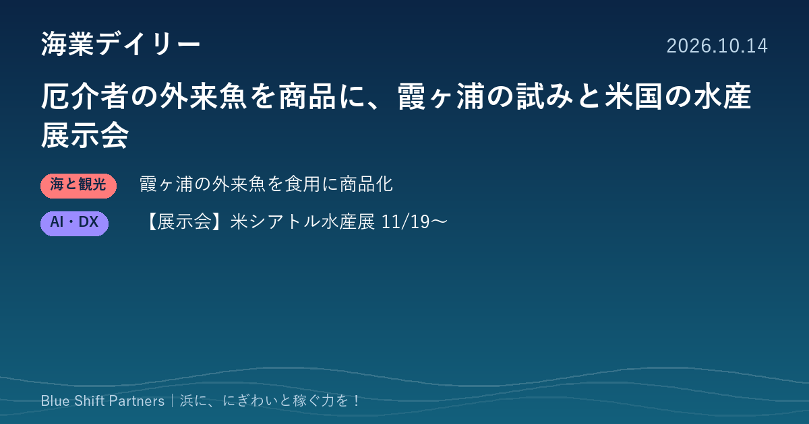

2026.10.14
厄介者の外来魚を商品に、霞ヶ浦の試みと米国の水産展示会

本日は2件をお届けします。茨城県が霞ヶ浦で増える外来魚アメリカナマズを食用資源として商品化した取り組みと、11月に米国シアトルで開かれる商業漁業の展示会です。
茨城県、霞ヶ浦のアメリカナマズを未利用魚サブスクで商品化
茨城県は、霞ヶ浦で増えている特定外来生物アメリカナマズを食用の水産資源として活用するため、株式会社ベンナーズと連携し、同社の未利用魚サブスクリプション「フィシュル!」での商品化を決めたと発表しました。霞ヶ浦北浦ではワカサギやシラウオの漁獲が減る一方でアメリカナマズが増え、漁網を傷めるなど漁業者の負担になっています。商品は解凍して焼くだけで食べられる形で、10月上旬から定期便で販売するとしています。
ここがポイント：漁の邪魔になる魚や値の付かない魚も、加工と販路を組み合わせれば商品になります。自治体が民間の販路と組んで未利用魚を売る形は、海の浜でも応用できます。
出典：茨城県政策企画部地域振興課（PR TIMES）「霞ヶ浦のアメリカナマズを商品化」（2026-09-29）
【展示会】商業漁業の展示会「パシフィック・マリン・エキスポ」、11月に米シアトルで開催
商業漁業の展示会「パシフィック・マリン・エキスポ2026」が、11月19日から21日まで米国ワシントン州シアトルのシアトル・コンベンションセンター（アーチ棟）で開かれます。公式サイトでは西海岸最大の商業海事展示会と紹介されており、漁業者、造船所、水産加工業者、港湾やマリーナの関係者が主な来場者として挙げられています。来場・出展の申込は公式サイトから行います。
ここがポイント：漁船・漁具・加工設備や港湾運営の最新動向を、北米の現場目線で一度に見られる場です。輸出や設備導入を考える漁協・加工業者の情報収集に役立ちます。
出典：Pacific Marine Expo 公式サイト（アメリカ）（2026-10-14）
厄介者の魚も、獲る理由と売る先がそろえば浜の収入源に変わります。食べ方の提案と販路づくりはセットで考えたいところです。設備や漁具の情報は海外にも目を向けると、次の一手のヒントが見つかります。